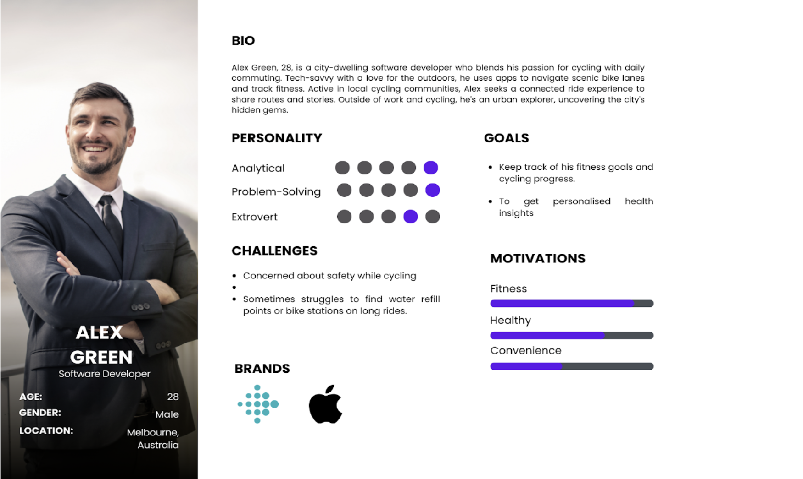

iBike - Redefining Cycling Experience
Summary
As a part of my project at the Industry Experience unit at Monash University, my team and I were committed to addressing the vital issue of cyclist safety in Melbourne. From week 3 to week 12, we meticulously crafted the iBike Ride App, a pivotal tool designed in iterative phases every three weeks. Our focused efforts were aimed at reducing cycling accidents, thereby nurturing a more sustainable and secure environment for the cycling community in the city.
Visit ibike.life to explore the app's features.
Problem Statement
In Melbourne, the safety of cyclists is a growing concern, especially given 55 cyclist deaths on Victorian roads over the last five years. The main issues contributing to this problem are shared roads with trucks and a lack of dedicated bike lanes. As the city grows and aims for a greener lifestyle, the need to address cyclist safety has become urgent. Melbourne's goal is to cut cycling accidents by 80% by 2030, setting a challenging yet necessary target. How might we develop simple and effective ways to make daily commuting safer for Melbourne's cyclists, while also improving the overall cycling environment in the city?.
My Role as a Business Analyst & UI/UX Designer
- Conducted in-depth user analysis to determine user's needs.
- Developed user stories and acceptance criteria tailored to cyclist daily commute.
- Designed a user journey map spotlighting user interaction with the app.
- Utilized Figma to create intuitive UI/UX designs, enhancing user's app experience.
- Played a pivotal role in the team's agile development cycle, ensuring a user-centric approach.
- Launched a comprehensive beta testing program to refine the app's functionality.
- Contributed to the development of the ibike.life website, employing HTML, CSS, and JavaScript.
Persona 
User Stories
- As Alex, a daily bicycle commuter, I want to log into the app easily to have a personalized and secure experience.
- As Alex, I want to be informed about accident-prone zones on the map so I can be cautious.
- As Alex, I want to share my real-time location with trusted contacts to ensure my safety during rides.
- As Alex, I want voice-assisted navigation so I can focus on the road without looking at the map.
- As Alex, I want to learn about the app's features during my first login.
- As Alex, I want to view my past cycling trips to track my journey history and reflect on my progress.
- As Alex, I want to view water taps and public restrooms on my route to plan my breaks and stay hydrated.
- As Alex, I want a sophisticated trip planner to organize my cycling activities efficiently.
- As Alex, I want to view recommended cycling trips to discover new and popular routes.
Agile Development & App Launch
Our agile methodology paved the way for rapid iterations and continuous improvement, leading to the successful launch of iBike on the App Store.
Prototype
Conclusion
The iBike Ride App project was an endeavor that showcased the power of user-centered design in promoting safety and well-being within the cycling community of Melbourne. As part of a dedicated team of three, we engaged in a comprehensive design and development process, employing various user research methodologies such as interviews, surveys, and usability testing over a 9-week period.
My contributions as a Business Analyst and UI/UX Designer were pivotal in shaping the app's direction. Through the creation of wireframes and prototypes, I was able to translate user needs into tangible design solutions that were iteratively refined using Figma. The culmination of this effort was a design system that not only resonated with our users but also significantly improved the user experience of the iBike platform.
The final project on expo recieved positive feedback from users, highlighting the effectiveness of the solutions provided. This project, as part of the Industry Experience unit at Monash University, was not just an academic exercise but a real-world application of skill and innovation that contributed to the greater good of Melbourne's cycling community.